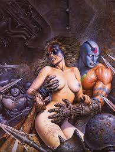
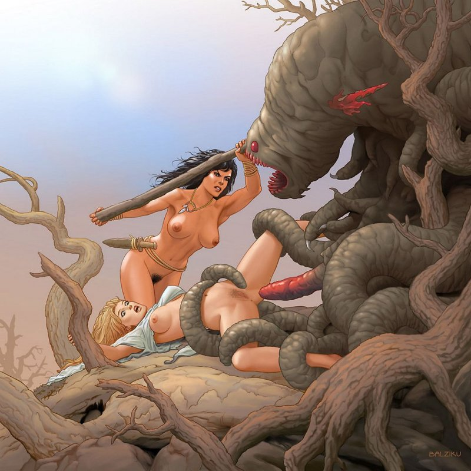
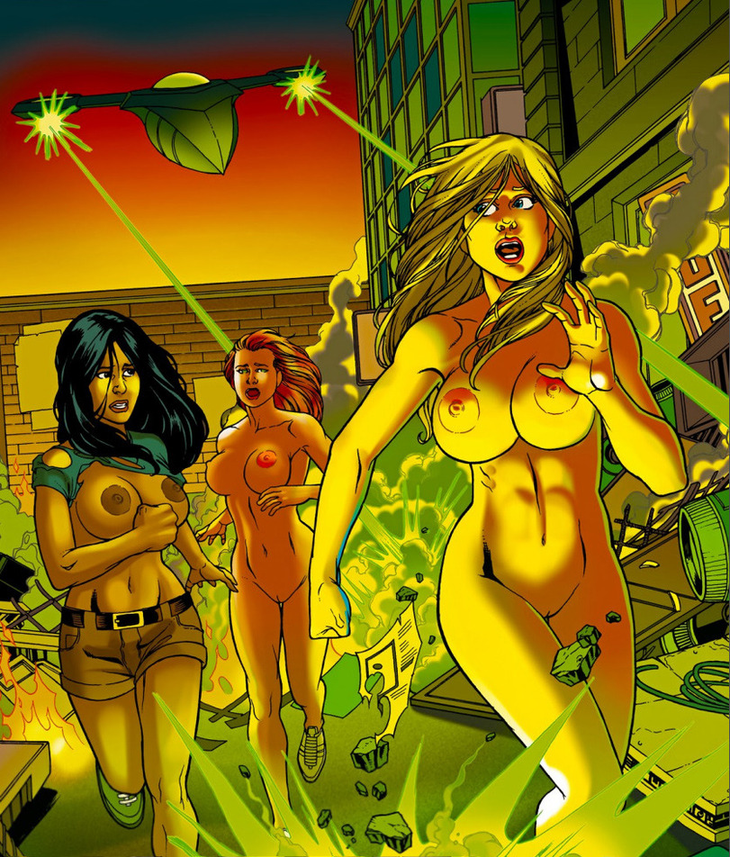
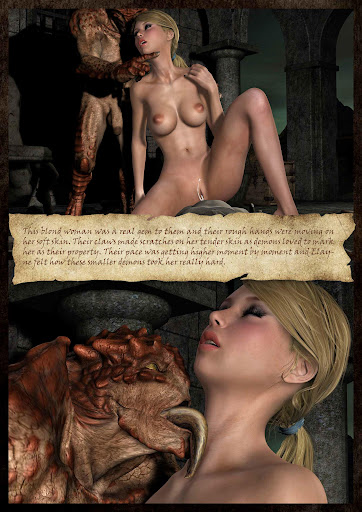
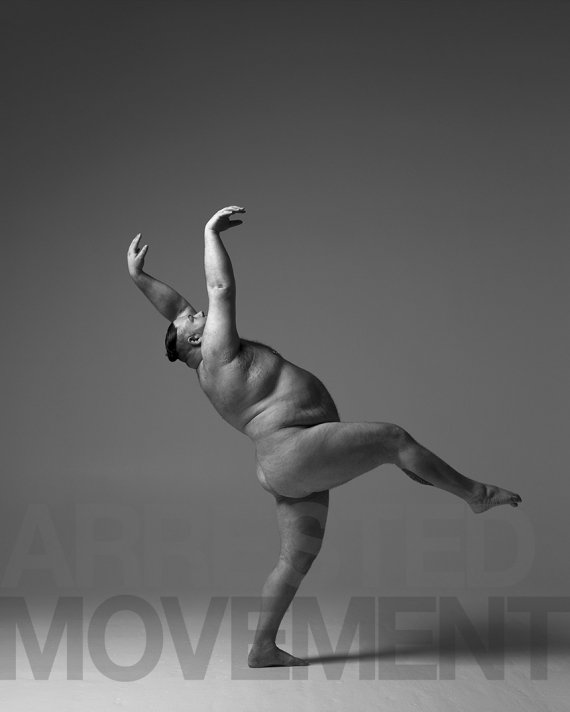

добыча

Он синий, она в шоке от того, что он синий. Но сдаваться просто так не намеряна.
борьба за честь

Они пришли нас покорить, но были такие мерзкие , что покоряться как-то не хотелось.Они пришли нас покорить, но были такие мерзкие , что покоряться как-то не хотелось.Они пришли нас покорить, но были такие мерзкие , что покоряться как-то не хотелось.
будни стриптизерши

День начинался как обычно, но потом пришли они.
Барби и оно.

она всегда думала что внешность не главное. исудить нужно по длинне языка.
сьесть или отыметь
вот в чем вопрос.
Лежу я такая в перьях
Ктоб знал что на земле так холодно. Иперья то совсем не греют.
поза "Любите меня сзади"
для любителей нижних 90.
поза "грудь попа"
Поза для демонстрирования и верхних и нижних 90, да да... и так можно извернуться.Главное чтоб спину не защемило.
поза "дома будет продолжение"
И вовсе там не группа мужиков на той стороне дороги)
поза "грацыозной лани"

Ивовсе я не потолстела любимый. Это стратегический запас на зиму)